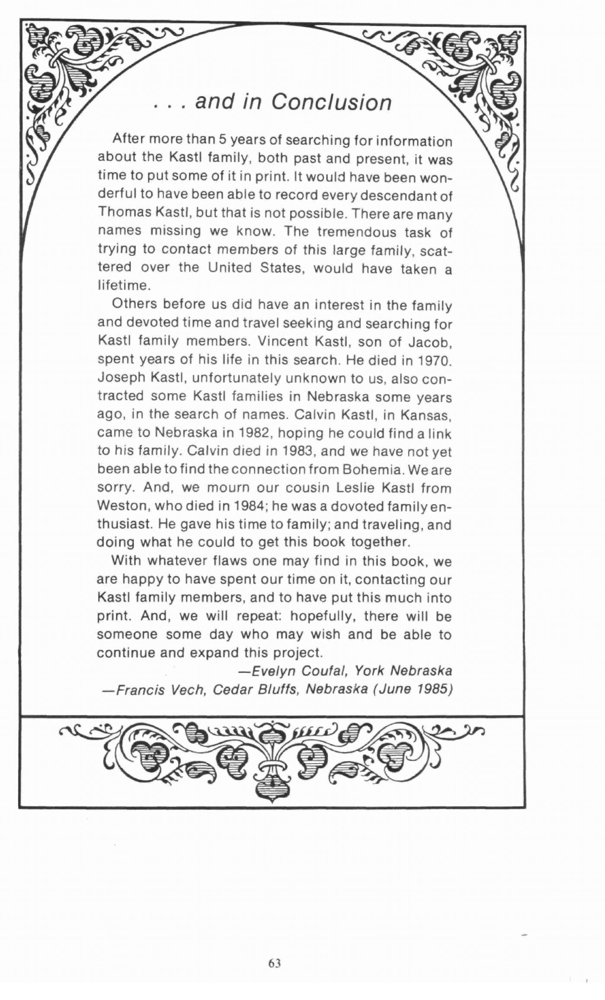

The book · And in Conclusion
Page 63 . . . and in Conclusion


Transcription
. . . and in Conclusion

After more than 5 years of searching for information about the Kastl family, both past and present, it was time to put some of it in print. It would have been wonderful to have been able to record every descendant of Thomas Kastl, but that is not possible. There are many names missing we know. The tremendous task of trying to contact members of this large family, scattered over the United States, would have taken a lifetime.
Others before us did have an interest in the family and devoted time and travel seeking and searching for Kastl family members. Vincent Kastl, son of Jacob, spent years of his life in this search. He died in 1970. Joseph Kastl, unfortunately unknown to us, also contracted some Kastl families in Nebraska some years ago, in the search of names. Calvin Kastl, in Kansas, came to Nebraska in 1982, hoping he could find a link to his family. Calvin died in 1983, and we have not yet been able to find the connection from Bohemia. We are sorry. And, we mourn our cousin Leslie Kastl from Weston, who died in 1984; he was a dovoted family enthusiast. He gave his time to family; and traveling, and doing what he could to get this book together.
With whatever flaws one may find in this book, we are happy to have spent our time on it, contacting our Kastl family members, and to have put this much into print. And, we will repeat: hopefully, there will be someone some day who may wish and be able to continue and expand this project.
—Evelyn Coufal, York Nebraska —Francis Vech, Cedar Bluffs, Nebraska (June 1985)
Transcriber’s notes
Closing essay of the 1985 book, signed and dated June 1985; text is single-column inside an ornamental frame, lower fifth of the page blank. Page number '63' is in a serif typeface unlike the sans-serif numbers of preceding pages. Print typos kept: 'dovoted', 'contracted' (for contacted), 'York Nebraska' without comma.